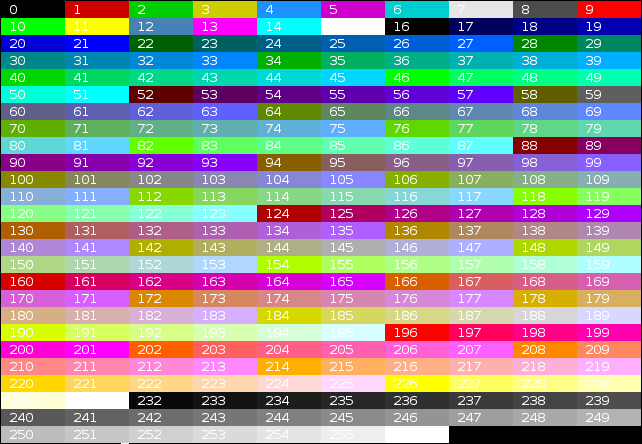
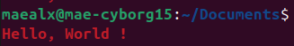
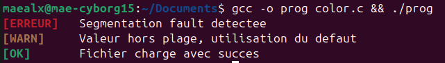
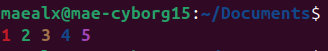
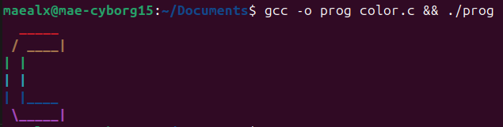
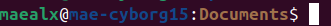
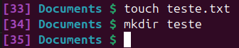
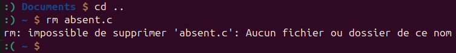

Mise en couleur dans un terminal : C et Bash
Table des matières

1. Introduction
L’affichage en couleur dans un terminal est quelque chose qu’on remarque pas forcément au début, mais qui devient vite utile dès qu’on commence à écrire des programmes un peu sérieux.
Ce rapport présente deux façons d’utiliser les couleurs dans un terminal : en langage C,
en insérant des séquences spéciales dans les chaînes passées à printf, et en Bash, en
modifiant l’invite de commande via la variable PS1.
2. Les Couleurs en C
2.1. Principe
Pour afficher du texte en couleur en C, on utilise des séquences d’échappement ANSI. Ce sont des chaînes de caractères spéciales que le terminal intercepte et interprète comme des instructions de mise en forme, plutôt que de les afficher directement.
La forme générale est la suivante :
\033[CODE_STYLE;CODE_COULEURm
\033est le caractère ESC (code ASCII 27, en octal 033),[ouvre la séquence de contrôle,CODE_STYLEest optionnel (gras, souligné, italique…),CODE_COULEURdéfinit la couleur du texte ou du fond,mtermine la séquence.
Important : il faut toujours terminer une zone colorée avec la séquence
\033[0m. Sans ça, la couleur reste active pour tout ce qui suit dans le terminal, même après la fin du programme, ce qui peut être assez perturbant.
Voici les principaux codes de couleur pour le texte (on ajoute 10 pour avoir la couleur de fond) :
| Code | Couleur |
|---|---|
| 30 | Noir |
| 31 | Rouge |
| 32 | Vert |
| 33 | Jaune |
| 34 | Bleu |
| 35 | Magenta |
| 36 | Cyan |
| 37 | Gris clair |
| 90 | Gris foncé |
| 91 | Rouge clair |
| 92 | Vert clair |
| 97 | Blanc |
Et les codes de style :
| Code | Style |
|---|---|
| 0 | Normal (reset) |
| 1 | Gras |
| 2 | Intensité réduite |
| 3 | Italique |
| 4 | Souligné |
| 5/6 | Clignotement |
| 7 | Inversion encre/fond |
2.2. Exemples progressifs
2.2.1. Exemple 1 : Hello World en couleur
Le premier exemple est le plus basique : on affiche un message en rouge et en gras.
#include <stdio.h> int main() { printf("\033[1;31mHello, World !\033[0m\n"); return 0; }

Figure 1 : Résultat de l’exemple 1
2.2.2. Exemple 2 : messages de statut
On peut enchaîner plusieurs couleurs pour simuler des niveaux de sévérité : rouge pour une erreur, jaune pour un avertissement, vert pour un succès.
#include <stdio.h> int main() { printf("\033[1;31m[ERREUR] \033[0m Segmentation fault detectee\n"); printf("\033[1;33m[WARN] \033[0m Valeur hors plage, utilisation du defaut\n"); printf("\033[1;32m[OK] \033[0m Fichier charge avec succes\n"); return 0; }

Figure 2 : Résultat de l’exemple 2
2.2.3. Exemple 3 : compteur coloré
Affiche une suite de nombres avec une couleur unique.
int main() { for (int i = 1; i <= 5; i++) { printf("\033[34m%d \033[0m", i); } printf("\n"); return 0; }

Figure 3 : Résultat de l’exemple 3
2.2.4. Exemple 4 : logo ASCII art en couleur
On affiche un logo ASCII art en colorisant chaque ligne avec une couleur différente, en cyclant sur un tableau de codes via le modulo.
#include <stdio.h> int main() { int couleurs[] = {31, 33, 32, 36, 34, 35}; int nb_couleurs = 6; char *lignes[] = { " _____ ", " / ____|", "| | ", "| | ", "| |____ ", " \\_____|", }; int nb_lignes = 6; for (int i = 0; i < nb_lignes; i++) { printf("\033[1;%dm%s\033[0m\n", couleurs[i % nb_couleurs], lignes[i]); } return 0; }

Figure 4 : Résultat de l’exemple 4
3. Les Couleurs en Bash
3.1. Principe
En Bash, les couleurs servent principalement à personnalisé l’invite de commande,
aussi appelée prompt. C’est le texte affiché avant chaque commande dans le terminal,
et il est définit par le contenu de la variable PS1. On peut voir sa valeur actuelle
avec :
echo $PS1
La syntaxe des séquences ANSI est la même qu’en C, mais avec une particularité
importante : les séquences non imprimables doivent être encadrées par \[ et \]
pour que Bash calcule correctement la longueur de la ligne et gère le curseur sans
décalage.
PS1='\[\033[CODE;COULEURm\]texte\[\033[0m\]'
Attention : il faut impérativement utiliser des guillemets simples
''autour de la valeur dePS1. Avec des guillemets doubles, les codes comme\uou\hne fonctionnes pas correctement.
Bash propose aussi des codes spéciaux pour insérer des informations dynamiques dans l’invite :
| Code | Résultat |
|---|---|
\u |
Nom de l’utilisateur courant |
\h |
Nom de la machine (hostname) |
\w |
Répertoire courant (HOME = ~) |
\W |
Dernier composant du chemin |
\t |
Heure au format 24h (HH:MM:SS) |
\d |
Date (ex : Tue May 26) |
\$ |
# si root, $ sinon |
\n |
Saut de ligne |
Pour que la configuration soit permanente, il suffit d’ajouter la ligne PS1…= à
la fin du fichier ~/.bashrc, qui est lu automatiquement à chaque ouverture d’un terminal.
3.2. Exemples progressifs
3.2.1. Exemple 1 : utilisateur, machine et répertoire
On complète l’invite avec le nom de la machine en bleu et le répertoire courant en jaune.
PS1='\[\033[1;32m\]\u\[\033[0;97m\]@\[\033[1;34m\]\h\[\033[0;97m\]:\[\033[1;33m\]\W\[\033[0m\]\$ '

Figure 5 : Résultat de l’exemple 1
3.2.2. Exemple 2 : prompt avec compteur de commandes
Ce prompt affiche le numéro de la commande en cours dans la session. Cela permet de suivre facilement combien de commandes ont été exécutées, ce qui peut être utile pour se repérer ou pour du débogage.
PS1='\[\033[1;35m\][\#] \[\033[1;36m\]\W \[\033[1;32m\]$ \[\033[0m\]'

Figure 6 : Résultat de l’exemple 2
3.2.3. Exemple 3 : prompt « humeur du terminal »
Ce prompt change d’apparence selon le résultat de la dernière commande. Si la commande réussit, un symbole positif s’affiche. Sinon, un symbole indique une erreur.
PS1='\[\033[1;32m\]$(if [ $? -eq 0 ]; then echo ":)"; else echo ":("; fi) \[\033[1;34m\]\W \[\033[1;33m\]$ \[\033[0m\]'

Figure 7 : Résultat de l’exemple 3